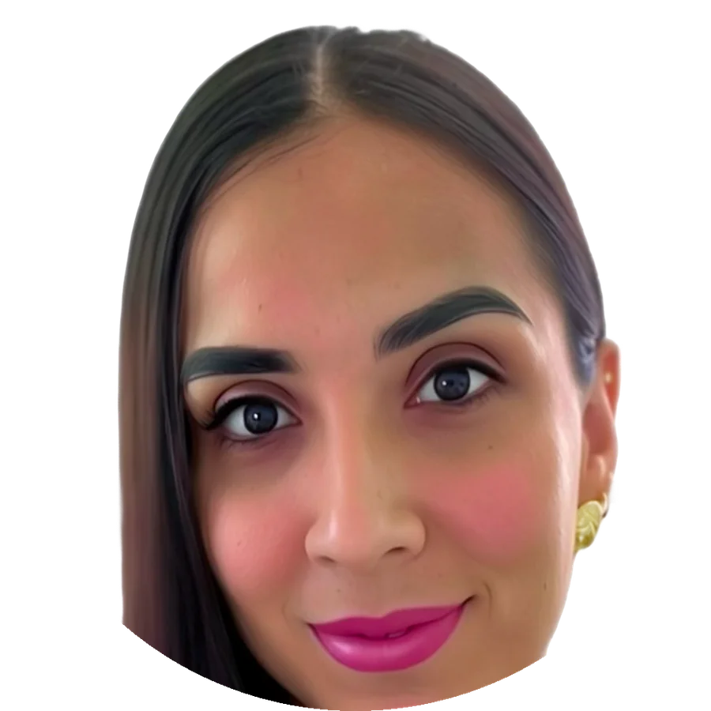

Dra. Bianca Rubí Flores Reyes
Médico Especialista en Anestesiología
Servicio de anestesiología para cirujanos, cirujanos dentistas y procedimientos fuera de quirófano. Agende mi apoyo de forma directa y segura.

Formación que respalda cada decisión clínica
Bienvenido(a), colega. Soy la Dra. Bianca Rubí Flores Reyes, médico anestesióloga. Estudié la carrera de Medicina en la Facultad de Medicina de la Universidad Autónoma de Nayarit (2010–2017), donde desarrollé las bases clínicas y humanas que hoy guían mi práctica diaria.
Realicé mi especialidad en Anestesiología en la Unidad Médica de Alta Especialidad (UMAE) No. 25 del IMSS, en Monterrey, Nuevo León, con aval académico de la Universidad de Monterrey (UDEM), egresando en 2023. Esta formación me permitió especializarme en el manejo integral del paciente quirúrgico: desde la valoración preanestésica hasta la recuperación postoperatoria.
Como parte de mi actualización continua, cursé el Diplomado en Anestesia Cardiovascular en Cirugía No Cardiaca y cuento con aval del Consejo Mexicano de Anestesiología.
Médico Cirujano
Facultad de Medicina, Universidad Autónoma de Nayarit
Especialidad en Anestesiología
UMAE No. 25 IMSS, Monterrey, N.L. · Aval académico de la Universidad de Monterrey (UDEM)
Diplomado en Anestesia Cardiovascular en Cirugía No Cardiaca
Aval del Consejo Mexicano de Anestesiología
Apoyo anestésico para su práctica profesional
Cada plan anestésico se personaliza de acuerdo con el tipo de procedimiento y las condiciones del paciente. Solicite y agende mi disponibilidad de forma directa.
Para cirujanos
- Anestesia general — para procedimientos que requieren pérdida completa de la conciencia.
- Anestesia regional — técnicas adaptadas al tipo de cirugía y al perfil del paciente.
- Valoración preanestésica — evaluación previa para planear el manejo más seguro.
- Manejo del dolor perioperatorio — control del dolor antes y después de la cirugía.
Para cirujanos dentistas
- Sedación dental — apoyo anestésico para cirugías orales, extracciones complejas o pacientes con manejo especial (ansiedad, comorbilidades).
Fuera de quirófano
- Sedación para imagenología — resonancia magnética, tomografía y otros estudios que requieran sedación (claustrofobia, inmovilidad necesaria).
- Sedación fuera de quirófano — procedimientos diagnósticos o terapéuticos fuera del área quirúrgica.
Experiencia en el sector público y privado
He brindado atención anestésica colaborando con equipos quirúrgicos de distintas especialidades.
Egreso de la especialidad en Anestesiología
UMAE No. 25 IMSS, Monterrey, N.L. — aval de la Universidad de Monterrey (UDEM)
Hospital IMSS Bienestar «Juan María de Salvatierra»
Atención anestésica en el sector público, Baja California Sur
Práctica privada
Hospital de Especialidades y Hospital María Luisa de la Peña, Baja California Sur
Mi compromiso con usted y su paciente
La anestesiología exige algo más que conocimiento técnico: exige presencia, empatía y responsabilidad absoluta por la vida del paciente en un momento de máxima vulnerabilidad.
Seguridad ante todo
Cada plan anestésico se diseña de forma individual, priorizando la seguridad del paciente por encima de cualquier otro factor, en coordinación estrecha con el especialista a cargo.
Comunicación clara y profesional
Coordinación directa y oportuna con cirujanos, cirujanos dentistas y equipos de imagenología, para que cada procedimiento se realice con la información necesaria y sin contratiempos.
Disponibilidad y compromiso
La puntualidad y la confirmación oportuna son clave cuando otro profesional depende de mi apoyo. Mantengo mi agenda actualizada y respondo con la mayor prontitud posible.
Solicite y agende mi apoyo
Consulte mi disponibilidad de fechas y horarios, indique el tipo de procedimiento, sede y duración estimada, y reciba confirmación directa antes del procedimiento.
Consultar disponibilidad y agendarAgenda en línea, directa y sin intermediarios.
¿Necesita apoyo anestésico para su procedimiento?
-
CoberturaBaja California Sur — La Paz, Cabo San Lucas y San José del Cabo
-
Correodrabiancarubi@gmail.com
-
DisponibilidadConsulte el calendario de agenda en línea
¿Cómo agendar?
- Consulte mi disponibilidad de fechas y horarios en el calendario en línea.
- Indique el tipo de procedimiento, fecha, sede y duración estimada.
- Reciba confirmación directa antes del procedimiento.